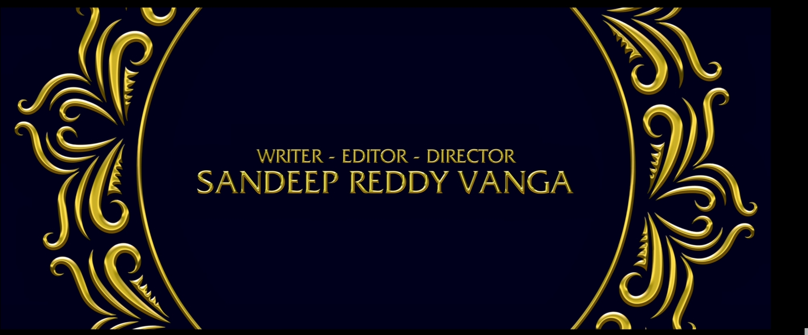

- Ranbir Kapoor Starrer ‘Animal Teaser’ OUT: On Ranbir Kapoor’s birthday, the teaser of his upcoming film Animal dropped online and this teaser is everything that one would have expected from a Sandeep Reddy Vanga film. The short teaser gives a glimpse of the film’s story which looks like a father-son tale. Here, Anil Kapoor and Ranbir play father and son who have always had a very difficult relationship with each other. But, despite the toxicity, Ranbir’s character is conditioned into believing that his father is the “best father in the world.”
- Watch Ranbir Kapoor’s Animal teaser here: 
- It appears that Ranbir’s character comes from an affluent family but his issues with his father push him towards a dark and violent path. The second half of the trailer has a glimpse of the same fight that was previously shown in the pre-teaser. Rashmika Mandanna plays Ranbir’s love interest and the teaser opens with her character implying that Ranbir shouldn’t be like his own father, and that just sets him off. The teaser ends with Bobby Deol opening the door but not much is revealed after that.
- Animal was previously scheduled to release in August but it was later postponed to December 1. Earlier, in a chat with Pinkvilla, Bhushan Kumar described Animal as a “pan-world” film and said, “We are very very excited and more than me, the audience is excited for it. This film has everything.
- It is a full on entertainer. It is a proper pan-India, pan-world film where there is drama, there’s action, there’s story, there’s mind-blowing, never seen before performance by Ranbir Kapoor;Anil Kapoor , Bobby Deol and everybody have done brilliant performances in this so obviously you are excited about this. And today if you are excited and the public is equally excited, numbers are very sure.
- Like we are seeing for Jawan, people have made up their mind that they have to see the film. Even when something was launched many months back, everyone was confident that they want to see the film.”
- Animal is Ranbir’s second release of the year after Tu Jhoothi Main Makkaar. The February release also starred Shraddha Kapoor and was perceived as a hit at the theatres. It did not generate many positive reviews but still managed to make Rs 149.05 crore at the box office, as per Bollywood Hungama.